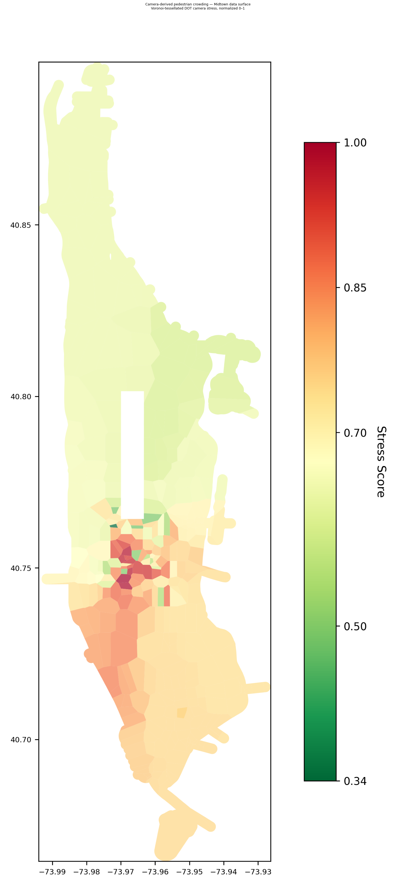
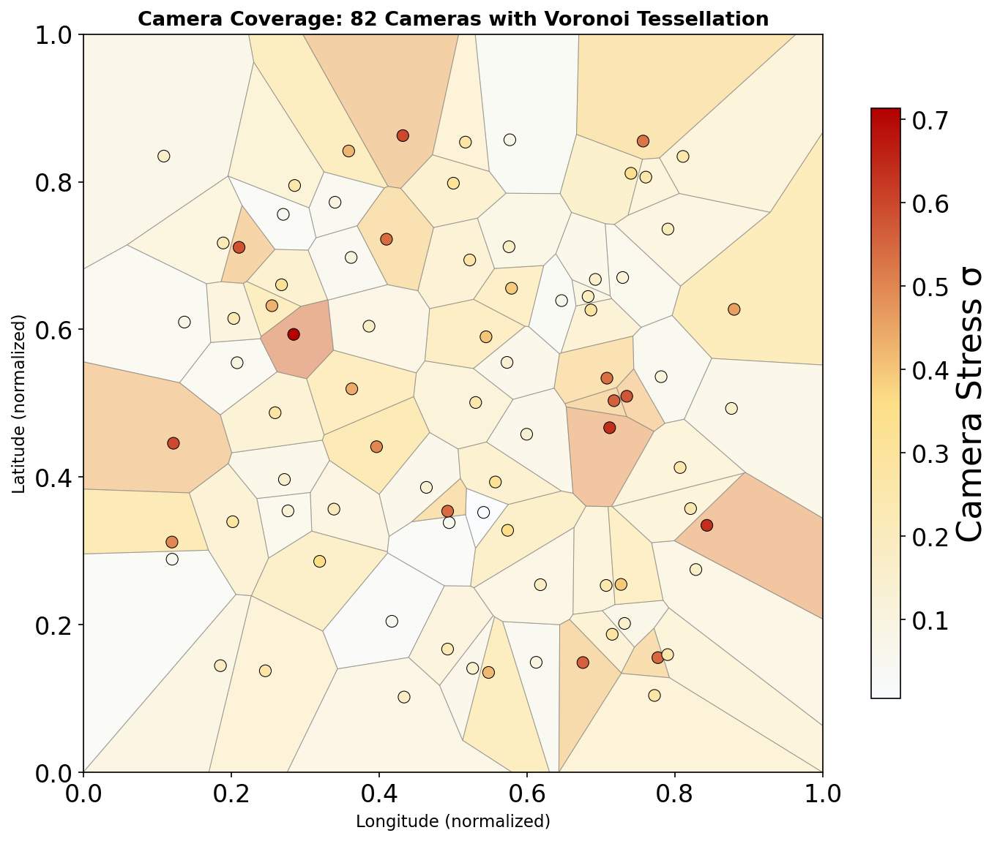

aimezaimez
aimezaimezThis is a sketch for an immersive installation, not a finished Guggenheim application. The work would translate the Manhattan stress-topology model into a space a viewer can walk through. Camera feeds, colored light, mapped sound, and a room layout based loosely on the shape of Manhattan would make the city graph perceptible as an environment.
The current research program uses Manhattan as a model system for how stress patterns organize in a city. The installation would turn that model into an embodied experience. Monitors would show selected camera views. Light would mark the graph region associated with those views. Color would shift with the stress topology. Sound would give the room a time-based layer.
The installation asks what a city graph feels like when its stress field is made spatial, visual, and sonic.

The Manhattan pedestrian graph already exists as a research substrate. Camera-derived stress, public capacity layers, route-cost calculations, and route comparisons make high- and low-pressure areas visible. The installation would use that system as a score for space.
Instead of showing a route as a line on a map, the room would let a viewer move through the modeled topology. One area might correspond to a low-pressure corridor. Another might correspond to a high-pressure intersection or edge set. The viewer would see camera images, light states, and sound cues change as the graph field changes.
The space could be arranged as a loose island or corridor form. It does not need to reproduce Manhattan literally. It should give viewers a bodily sense that the city has regions, thresholds, pressure gradients, and routes.

The camera feeds are not decoration. They are the source of the measured field. The installation should show the relation between image, place, and graph: a map panel for selected camera positions, two to four camera panels for low- and high-pressure moments, a color field showing how images become stress topology, and a route comparison showing how routing changes over that field.
The sound layer would be dedicated to Dada. Dada recorded sounds across New York during a residency connected to Zurich. I would like to ask whether those recordings can be used, with permission, as the sound layer for this installation.
The installation does not assume access to those recordings. It would first require permission from the relevant rights holders, residency sponsors, estate, or trusted contact network. If the recordings can be used, the sound layer could let the installation hold two city models at once: the measured city produced by cameras and the remembered city recorded by Dada.
If the recordings cannot be used, the fallback would be to make a new sound layer using a related city-walk method and to acknowledge Dada's recordings as an unrealized origin point for the work.
For a gallery, the project offers an installation about AI that is not centered on a chatbot or generated image. It shows AI-adjacent modeling as a way of making an environment legible. It connects cameras, city movement, stress, sound, and route behavior in a way a viewer can physically enter.
For funders, the project sits between urban sensing, media installation, time-based sound and image, AI and environmental representation, memorial archive, and city sound. It could be presented as a gallery installation, university gallery project, media-arts commission, or public-facing research exhibition.